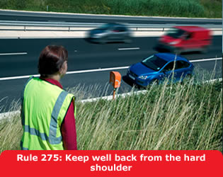

2. Additional rules for motorways (275 to 278)
275
If your vehicle develops a problem, leave the motorway at the next
exit or pull into a service area. If you cannot do so, you should:
- pull on to the hard shoulder and stop as far to the left as
possible, with your wheels turned to the left
- try to stop near an emergency telephone (situated at
approximately one-mile intervals along the hard shoulder)
- leave the vehicle by the left-hand door and ensure your
passengers do the same. You MUST leave any animals
in the vehicle or, in an emergency, keep them under proper control
on the verge. Never attempt to place a warning triangle on a
motorway
- do not put yourself in danger by attempting even simple repairs
- ensure that passengers keep away from the carriageway and hard
shoulder, and that children are kept under control
- walk to an emergency telephone on your side of the carriageway
(follow the arrows on the posts at the back of the hard shoulder)
– the telephone is free of charge and connects directly to an
operator. Use these in preference to a mobile phone (see Rule 283).
Always face the traffic when you speak on the phone
- give full details to the operator; also inform them if you are a
vulnerable motorist such as disabled, older or travelling alone
- return and wait near your vehicle (well away from the carriageway
and hard shoulder)
- if you feel at risk from another person, return to your vehicle
by a left-hand door and lock all doors. Leave your vehicle again as
soon as you feel this danger has passed.
Laws MT(E&W)R reg 14 & MT(S)R reg 12

276
Before you rejoin the carriageway after a breakdown, build up speed
on the hard shoulder and watch for a safe gap in the traffic. Be
aware that other vehicles may be stationary on the hard shoulder.
277
If you cannot get your vehicle onto the hard shoulder:
- do not attempt to place any warning device on the carriageway
- switch on your hazard warning lights
- leave your vehicle only when you can safely get clear of the
carriageway.
278
Disabled drivers. If you have a disability which
prevents you from following the above advice you should:
- stay in your vehicle
- switch on your hazard warning lights
- display a ‘Help’ pennant or, if you have a car or
mobile telephone, contact the emergency services and be prepared to
advise them of your location.